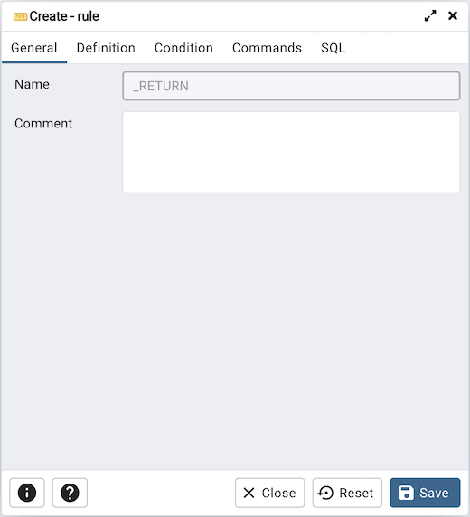
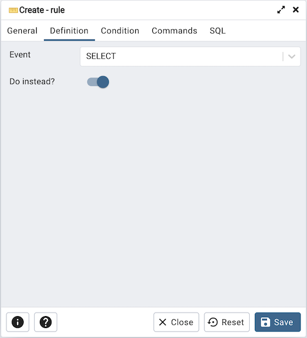
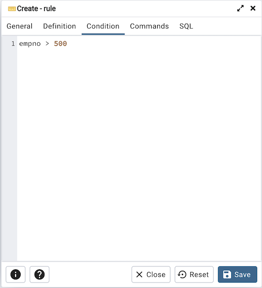
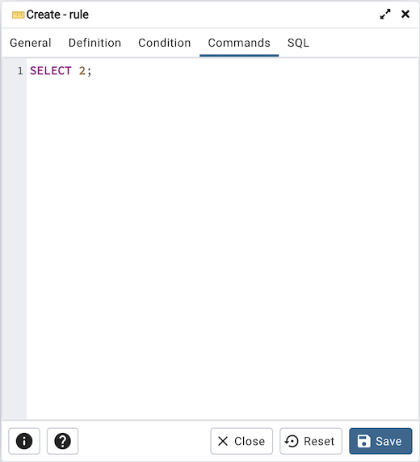
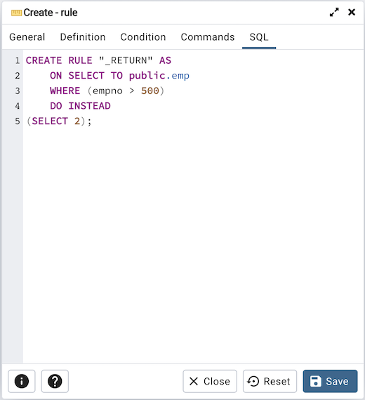

Rule Dialog¶
Use the Rule dialog to define or modify a rule for a specified table or view. A PostgreSQL rule allows you to define an additional action that will be performed when a SELECT, INSERT, UPDATE, or DELETE is performed against a table.
The Rule dialog organizes the development of a rule through the General, Definition, Condition, Commands tabs. The SQL tab displays the SQL code generated by dialog selections.
Use the fields in the General tab to identify the rule:
Use the Name field to add a descriptive name for the rule. The name will be displayed in the pgAdmin tree control. Multiple rules on the same table are applied in alphabetical name order.
Store notes about the rule in the Comment field.
Click the Definition tab to continue.
Use the fields in the Definition tab to write parameters:
Click inside the Event field to select the type of event that will invoke the rule; event may be Select, Insert, Update, or Delete.
Move the Do Instead switch to Yes indicate that the commands should be executed instead of the original command; if Do Instead specifies No, the rule will be invoked in addition to the original command.
Rule enabled field is available in rule dialog once the rule is created. You can select one of the four options available.
Click the Condition tab to continue.
Specify a SQL conditional expression that returns a boolean value in the editor.
Click the Commands tab to continue.
Provide a command in the editor that defines the action performed by the rule.
Click the SQL tab to continue.
Your entries in the Rule dialog generate a SQL command (see an example below). Use the SQL tab for review; revisit or switch tabs to make any changes to the SQL command.
Example¶
The following is an example of the sql command generated by user selections in the Rule dialog:
Click the Info button (i) to access online help.
Click the Save button to save work.
Click the Close button to exit without saving work.
Click the Reset button to restore configuration parameters.